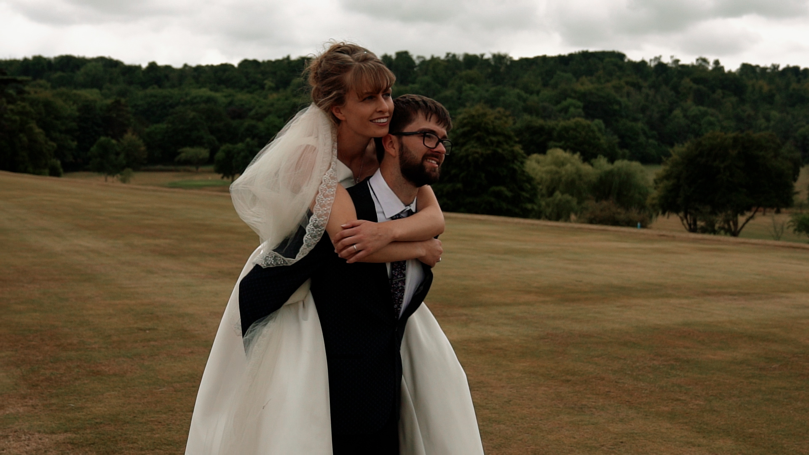

Wow where to start? Sirle was outstanding from start to finish. The zoom call set the tone and I knew we had chosen a wonderful person just from talking to her. She took the time to plan and talk through the day and discuss what we wanted from the video. The moment I met her on my wedding day I instantly felt like I had known her before and that she was a friend. She made us feel at ease and throughout the day. We didn’t even notice her filming. The videos are perfect. All videos have been edited with such care and thoughtfulness we just love the little details and how they have been matched to speeches making watching them so special. We cannot thank Sirle enough for her amazing videography such special moments and memories captured that we will cherish forever. We would highly recommend Sonder Moments Weddings for those wanting a professional, friendly, attention to detail videographer.
-Bethany Scott-